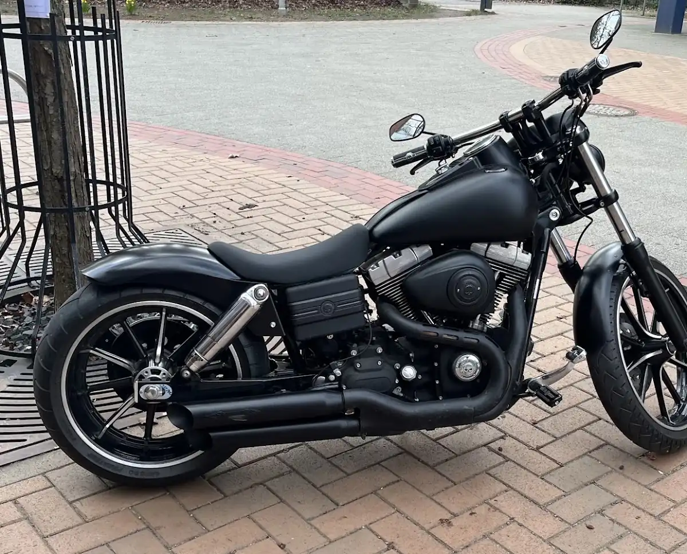
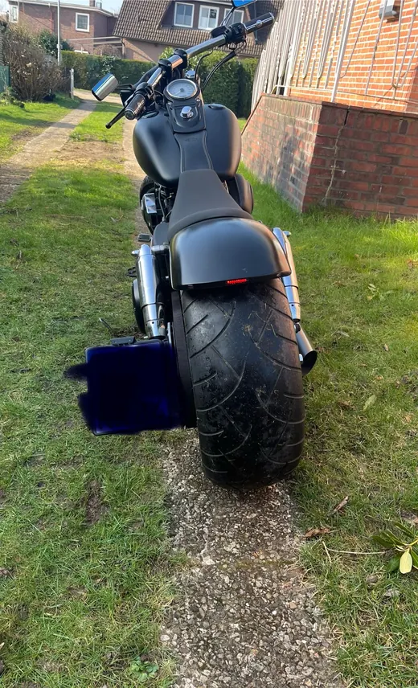

Sattlerei · Wentorf bei Hamburg
Maßgeschneidertes Leder
für Motorrad und Auto.
Handarbeit aus Wentorf.
Sitzbänke, Autositze, Cabrio-Verdecke und Wohnmobil-Interieur — gefertigt und repariert in Handarbeit, mit echten Ledermustern zur Auswahl, bevor eine Naht gesetzt wird.

Über die Werkstatt
Jede Sitzbank erzählt, wie sie gefahren wird.
Jarla Rolfs fertigt und repariert in Wentorf bei Hamburg handgenähtes Leder für Motorrad und Auto — von der einzelnen Sitzbank bis zum kompletten Interieur. Vor jedem Auftrag steht ein persönliches Gespräch: Materialmuster in Leder, Kunstleder und Alcantara liegen bereit, Unterschiede sowie Vor- und Nachteile werden in Ruhe erklärt.
Ob schlichter Einzelsitz, nachgearbeitete Naht am Cabrio-Verdeck oder das komplette Wohn- und Fahrerinterieur eines Wohnmobils: Jedes Projekt wird auf das Fahrzeug und die Person dahinter zugeschnitten.
Leistungen
-
Motorradsättel & Sitzbänke
Neubezug und Umbau von Sitzbänken — schlicht oder individuell abgesteppt, in Leder oder strapazierfähigem Kunstleder.
-
Auto-Interieur
Sitze und Innenausstattung im Fahrzeug neu beziehen, ausbessern oder auf Wunsch komplett neu gestalten.
-
Cabrio-Verdecke
Reparatur und Nacharbeit von Nähten am Verdeck — präzise Stichführung für dichte, saubere Kanten.
-
Wohnmobil-Interieur
Kompletter Wohn- und Fahrbereich in Leder und Alcantara bezogen — von der Sitzgruppe bis zu den Fahrersitzen.
-
Material- & Farbberatung
Echte Muster in Leder, Kunstleder und Alcantara vor Ort — Unterschiede, Haptik und Preis auf einen Blick.
Bewertungen
Bewertet mit4,9 von 5 Sternen.
Beratung mit echten Mustern
Vor der Entscheidung zeigt Jarla Rolfs Unterschiede zwischen Leder, Kunstleder und Alcantara an echten Materialproben.
Saubere Verarbeitung
Häufig genanntes Thema: präzise Nähte und hochwertige Polsterarbeit, von der einzelnen Sitzbank bis zum ganzen Interieur.
Auch für besondere Projekte
Vom nachgearbeiteten Cabrio-Verdeck bis zum komplett in Leder und Alcantara bezogenen Wohnmobil.
Kontakt
Vorbeikommen
oder anrufen.
- Adresse
- Auf dem Ralande 8b
21465 Wentorf bei Hamburg - Telefon
- 01522 8774934
- Öffnungszeiten
- [ÖFFNUNGSZEITEN EINFÜGEN]
Beim Laden der Karte baut Ihr Browser eine Verbindung zu Google-Servern auf und überträgt dabei Ihre IP-Adresse. Mehr dazu in der Datenschutzerklärung.